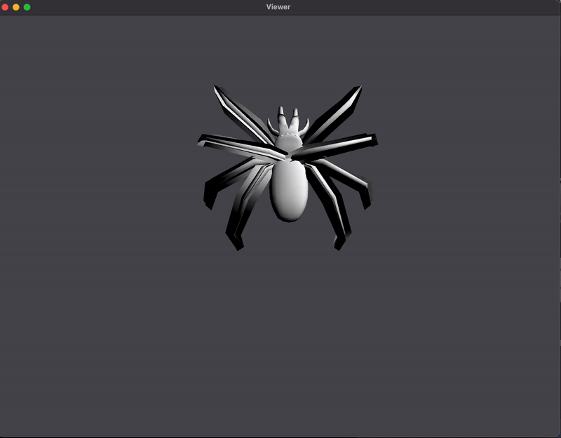
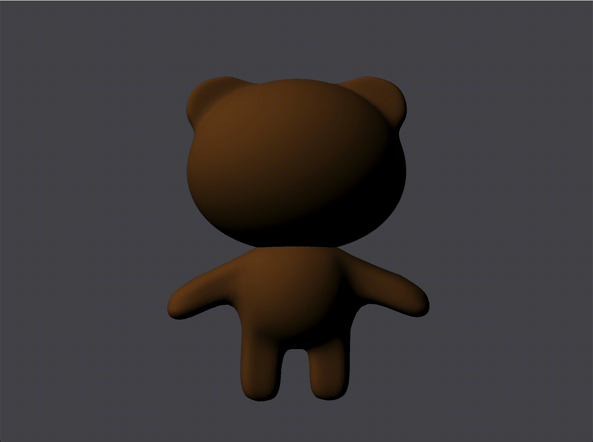

Paws in Motion
CS184 Spring 2025 Final Project Report
Link to webpage: https://025rhu.github.io/cs184-final-project/final-report/index.html
Link to proposal GitHub repository: https://github.com/025rhu/cs184-final-project
Abstract
For our project, Paws in Motion, we built a lightweight FBX animation viewer that uses temporal keyframing to interpolate between different poses at different times for a character mesh, to visualize a final, smooth animation of the character’s movements. In our program, we first displayed a viewer using the nanogui library, and used the Assimp library to load in a bear character from an FBX file, processing and computing all the information needed for temporal keyframing, such as the character’s bone hierarchy, and each bone’s position, rotation, and scale at each time. We also sent vertex data, including which bones affected the vertex (bone indices) and how much each bone affected the vertex (bone weights), to the GPU. Then, every time our OpenGL viewer drew to the screen, we interpolated the character’s bone transforms, and used hierarchical transforms to get each bone’s final transformation. We then sent these bone transforms to the GPU, where our shader program used them to compute each vertex’s final position. With that, and a basic diffuse shader program, we rendered our bear animation to the screen.
We built our program completely from scratch. Our code started from a blank sheet, but we did refer to homework 4’s repository to help with setting up our own (src/, ext/, shaders/, models/), getting external libraries, and writing a proper CMakeLists.txt. With that, the final product is an in-house FBX keyframe animator!
Technical Approach
How Our Approach Differed From Our References + Unique Decisions We Made
A majority of our inspiration came from the paper, “Spatial keyframing for performance-driven animation.” Thus our original goal was very similar to constructing a similar engine that could perform spatial keyframing given some keyframes generated with our own UI.
We weren’t able to construct a whole UI or focus on improving performance through our own method, especially since we ended up implementing temporal rather than spatial keyframing for simplicity. In fact, based on the current state of our code, we actually require more space simply because we parse through a .fbx file which already sufficiently encodes the animation. But this is totally ok, as our end goal became being able to reconstruct animation through select frames. Perhaps given more time, we could reduce the bandwidth of inputs our program needs. Importantly, we also only chose to use linear interpolation, and thus our animations didn’t perfectly match up for example, Blender animations which make use of Bezier splines and curves. Ultimately, like the resources we used, we were able to reconstruct animation via interpolation, all from scratch.
Blending, Rigging, Animating Keyframes
In this project, we began by learning to use Blender to 3D model and rig our bear character. We blocked out the base of the bear with primitive meshes, like cubes and spheres, for the head, ears, torso, and limbs. To enhance the appearance, we then used subdivision modifiers and sculpting techniques to create detail and smoother curves, and we also added a dark brown color to the entire bear. In terms of rigging, we started by creating a bone hierarchy, which included bone chains for the arms, legs, spine, and head. To make parsing the armature later easier, we also added a root bone so that all the bones ended up within 1 big chain. Then, to establish bone weights, we set the parent of the mesh to the armature and allowed Blender to assign automatic weights. Finally, for movement, we moved around some of the bones to create a couple different poses and set them at keyframes (10 frames apart from each other). From here, we exported the file as an FBX file, which is then ready to be parsed by the program to animate the character.
Our main hurdle in this section was learning how to use Blender, as it was our first time working with the software and 3D modeling. We started by following tutorials on how to build simple objects and familiarize ourselves with Blender, and then slowly added more color and detail to our bear character. We also made sure to look into rigging tutorials before tackling the animation aspect to ensure that we were creating accurate armature for the character.
Setting up the Repo
We initialized our project in a similar fashion to other homeworks. We created a /src folder, a /shaders folder, and within /src we create main.cpp, which was our entry point.
From here, we needed to create a CMakeLists.txt, and then run cmake within the /build directory. This took a lot of trial and error as well as debugging, as it was difficult to set up CMakeLists.txt correctly. We also at first tried fetching the Assimp repo we needed on the fly, by using FetchContent. Eventually, we settled for an approach that integrated the Assimp repo under /ext, so we could use all of Assimp's functionality easily.
Our Program
- Data Structures + Design
We defined our structs / data structures in the animator.h and animator.cpp files. The structs we implemented include:
- Vertex struct: stores information (position, normal, color) for every vertex in the object mesh
- Bone struct: stores id, bind-pose offset matrix, rest/local/global transforms for every bone; keeps track of keyframe channels (position, rotation, scaling) and parent-child relationships;
interpolateAtmethod to compute and propagate transforms - Mesh struct: stores list of bones, skin‐to-bind matrices, duration, ticks per second;
retrieveSceneValuesmethod to parse Assimp data,animateAtmethod to build boneMatrices - Animation struct: stores character, shader ID, uniform location for uBoneMatrices[], uniform location for model, indexCount;
drawmethod to upload skin matrices and issue draw call
- Loading in the Model
text
- Animation + Interpolation
Based on the data we parsed through, for each Bone we performed translational, rotational, and scaling interpolations, and to actually animate the movements, we’d simply just update the rendered positions to the display as a function of time. We originally thought this would be the most theory-heavy and involved part of our project, but the math itself ended up being straightforward-- essentially boiling down to linear interpolation (and spherical interpolation for rotations).
- Camera Views
Because we wanted to generalize the animation process, we had to experiment with different perspectives of how the model rendered. In code, we had to try out different matrix values. In the end, our process involved calculating a simple bounding box, using the model’s bone data to calculate a suitable distance for the camera to view the object, and viewing the model from a diagonal angle to see it in more detail.
- Shading/Skinning
For shading our model, we chose to use a very simple diffuse model, just like the one covered in-class. However this time, we had to take skinning into account. Because the locations of the bones are constantly being updated, we must update the shading of the mesh to accurately reflect this. So for every vertex, we shaded based on a linear combination of a few of its surrounding bones. Though the code for this wasn’t very long, it took quite a bit of conceptual understanding and experimenting with the output renderings to fully implement.
Debugging / Wonky Results / Particular Challenges
We found some particular roadblocks especially when dealing with actually rendering out the image to test for. We found that initially, much of the code we were writing was difficult to fully test out. For instance, we had to first flush out the data structures of our animation objects, but we didn’t have anything to test that the data structures were actually displaying until quite later.
What was also challenging was trying to decipher how the different tools we used interacted with each other. For example, we really had to understand how the armatures in our Blender model worked if we were to understand how our own produced animation worked. Simple things we overlooked in Blender, such as the existence of an extraneous bone and multiple meshes instead of a singular one threw us off as we tried to understand why our animation didn’t look the way we wanted it to, at first believing it to be a purely code-side issue.
What We Learned
First, we learned how to use Blender to rig a character, for the first time. For the coding portion, we learned how to set up a C++ repository with a shader program, to the point where we learned the ins and outs of CMakeLists.txt. To set up the window and render our animation, we learned more about OpenGL and nanogui, including GL functions and variables, and how it actually connects our C++ code to our shader programs. To load in the FBX file and retrieve all the necessary data correctly, we learned about the Assimp library and its data structures and functions. To animate the character, we learned how to properly apply hierarchical transforms with offset matrices, and the actual interpolation algorithms themselves. To view the animation properly in our nanogui window, we really dug deep into understanding camera view and its associated matrices (view matrix and projection matrix).
Results
|

|

|

|
References
- Paper on spatial keyframing for performance-driven animation: https://dl.acm.org/doi/10.1145/1281500.1281536
- Example of Implementing Keyframe Aniamtion: https://veeenu.github.io/blog/implementing-keyframe-animation/
- Using Blender for animation: https://www.blender.org/features/animation/
- Blender Character Model Example: https://www.youtube.com/watch?v=aMRRNC1J6tU
- Tutorial for Character Rigging: https://www.youtube.com/watch?v=jIwrswJEFBQ
- Assimp Documentation: https://documentation.help/assimp/index.html#main_data
Contributions from each team member
Rachel
- Set up repository with CMakeLists.txt with proper extensions, got a basic view of a FBX file going, set up a shader program
- Designed and implemented the Bone / Mesh / Animation classes/data structures
Philip
- Designed initial animation class, cleaned up code structure for Viewer/Animation classes
- Debugging for inverse-bone matrix binds
Crystal
- Rigging the character + building the character + animating the character with poses
- Designed and implemented the Bone / Mesh / Animation classes/data structures
Jessica
- Learned Blender, exporting the character correctly from Blender
- Debugging skinning and setting up how to actually view the animation and ensure compatibility with Blender
Overall, the lines aren’t the clearest because we all worked together pretty collaboratively; while tasks could generally be assigned independently, such as loading in the file, doing the interpolation algorithm / design our data structures, then sending stuff to GPU + shader program + draw function stuff (openGL functions). But a lot of this depended on the design of the program itself, which we had an initial idea of, but evidently would discover more that would change our design along the way, thus affecting every single one of these tasks. Ultimately, we all worked together on the viewer, interpolation algorithms, loading in the FBX file, sending data to the GPU, writing a shader program, and of course debugging everything to get the code to work.
A lot of our work also required iterating on our code, completely replacing previous versions that others did based on new designs.
Other Links
Slides (short version) https://docs.google.com/presentation/d/1zKIBz6-Fbq15RwVmsrjdHqBxfk9Z2w5rl7Ap6taBi34/edit?usp=sharing
Slides (long version) https://docs.google.com/presentation/d/16yg85rvm-EwEcx7TumWZmbqK876pfaWOhTOr7q8jz0c/edit?usp=sharing
Video link: https://drive.google.com/file/d/1JWaMLC2_vuAcSkP0bHd4urUslKMcrttd/view?usp=sharing